Pano
Toplam / çevrimiçi / çevrimdışı sayaçları, son konum haritası, son olaylar ve depolama kotası.
Sürüm 1.0.0, Windows 10 / 11 için
ERLİK, erlikd sunucusuna bağlanan Android cihazları tek bir karanlık arayüzden
izlemek, yönetmek ve komuta etmek için yazılmış bir masaüstü konsoludur. Arayüz tamamen
Dear ImGui ile çizilir; Win32 + DirectX 11 üzerinde çalışır, harici DLL gerektirmez.
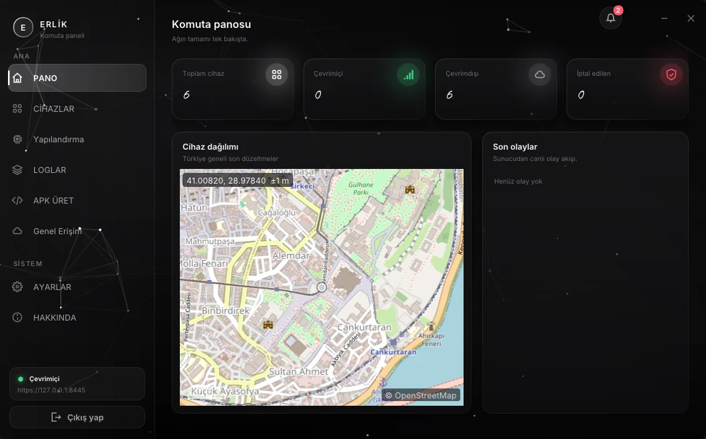
Üç parçadan oluşan bir sistem: Windows paneli, sunucu ve Android ajanı. Panel bir istemcidir — iş mantığının tamamı sunucuda ve ajanda çalışır.
Windows 10/11 üzerinde çalışan tek EXE. JSON API'yi okur, komut yazar, SSE akışını tüketir. Ağ işi ayrı iş parçacığında; arayüz donmaz.
Go ile yazılmış yönetim servisi. Cihaz envanteri, komut kuyruğu, olay/konum deposu, kimlik doğrulama ve tünel süpervizörü burada.
Kotlin tabanlı servis. Kayıt anahtarıyla sunucuya bağlanır, gRPC/mTLS üzerinden komut alır, ekran ve konum akıtır.
flowchart LR
subgraph WS["Windows iş istasyonu"]
P["ERLIK.exe
ImGui + D3D11"]
D["erlikd
Go admin API"]
L["%APPDATA%\\ERLIK
config.ini · logs"]
P --- L
end
subgraph NET["Genel ağ"]
CF["cloudflared
HTTPS tüneli"]
end
subgraph PH["Android cihaz"]
A["Ajan APK
Kotlin servis"]
end
P -- "HTTPS · JSON /api/*" --> D
D -- "SSE /api/stream" --> P
D -- "gRPC · mTLS" --> A
A -- "kayıt + canlı ekran" --> D
D --- CF
CF --- A
https://127.0.0.1:8445 adresine bağlanır. Yani ilk denemede
erlikd'nin aynı makinede çalışıyor olması gerekir. Farklı bir sunucuya bağlanacaksan
adresi Bağlantı ekranından ya da config.ini içinden değiştirirsin.
On dört modül aynı kabuk içinde; her biri kendi ekran dosyasında yaşar.
Toplam / çevrimiçi / çevrimdışı sayaçları, son konum haritası, son olaylar ve depolama kotası.
Carousel ve liste görünümü, ad/grup arama, durum süzgeci, 4 saniyelik otomatik tazeleme.
30+ komut tipi için katalog, JSON argüman şablonu, kuyruk ve sonuç geçmişi.
Ajanın JPEG kareleri; çözme işçi iş parçacığında, doku üretimi arayüzde.
Dokunma, kaydırma, donanım tuşları, metin yazma, UI ağacından öğeye tıklama.
Dizin gezme, indirme/yükleme, silinen dosyaları görme ve kurtarma.
GPS noktaları, doğruluk/hız, rota özeti (km, hareket süresi, durak), OpenStreetMap.
Olay akışı, sıra numarası, JSON yük görüntüleme.
Tek kullanımlık kayıt anahtarı, panoya kopyalama, dört adımlı kurulum rehberi.
SSE canlı akışı, komut/olay/denetim süzgeçleri, okunur enum adları, CSV dışa aktarma.
Global ve cihaz kapsamlı ajan belgesi, revizyon geçmişi, geri alma, toplu itme.
Binder + ajan birleştirme, etiket/paket/ikon, izin maskeleri, gizleme, QR ile kurulum.
cloudflared indirme/kurma, HTTPS tüneli, keşif belgesi yayını.
7 dil, 6 hazır vurgu + özel renk, arka plan stilleri, DPI ölçeği, tepsi davranışı.
WDA_EXCLUDEFROMCAPTURE).İki yol var: hazır EXE'yi indirmek veya kaynaktan derlemek. İkisi de tek dosya üretir.
Releases sayfasından ERLIK-1.0.0.exe dosyasını al.
EXE'yi boş bir klasöre koy. Yanına assets\ klasörünü de kopyalarsan logo, font ve ikonlar bulunur.
Çift tıkla. İmzasız olduğu için SmartScreen çıkarsa Ek bilgi → Yine de çalıştır.
Panel bir istemcidir; erlikd çalışmıyorsa bağlantı kurulmaz. Sunucu ayrı kurulur (aşağıya bak).
| Gereksinim | Not |
|---|---|
| Windows 10 2004+ / Windows 11 | Stream proof için WDA_EXCLUDEFROMCAPTURE gerekir |
| Visual Studio 2022 veya Build Tools 2022 | “Desktop development with C++” iş yükü zorunlu |
| Windows SDK | WinHTTP, WIC, D3D11 başlıkları |
| Paket yöneticisi | Gerekmez — Dear ImGui external/imgui altında gömülü |
build.batbuild.bat, vswhere.exe ile MSVC'yi bulur; Community / Professional / Enterprise /
BuildTools ve VS 2019 kurulumlarını sırayla dener. Beklenen çıktı:
[1/3] derleniyor...
[2/3] kaynaklar...
[3/3] baglaniyor...
[OK] build\ERLIK.exeDerleme bayrakları: /std:c++17 /O2 /MT /utf-8 /MP /W3. /MT sayesinde
çıktı tek başına çalışır — Visual C++ redistributable kurmak gerekmez.
flowchart TD
A["ERLIK-1.0.0.exe indir
veya build.bat"] --> B{"EXE açıldı mı?"}
B -->|hayır| B1["vcvars64.bat / DirectX hatası
→ Sorun giderme"]
B -->|evet| C["Lisans ekranı"]
C --> D["Sunucu adresi + parola"]
D --> E{"erlikd çalışıyor mu?"}
E -->|hayır| E1["erlikd -lan
8445 portu"]
E1 --> D
E -->|evet| F["5 aşama: TLS → sertifika
→ kimlik → cihazlar → hazır"]
F --> G["Kabuk açılır"]
G --> H["Cihaz kaydı
Kopya → anahtar → APK"]
H --> I["İzleme, kumanda, dosya, konum"]
%APPDATA%\ERLIK\ klasörü oluşturulur: config.ini + logs\.https://127.0.0.1:8445, varsayılan dil Türkçe, varsayılan tema Mono.ERLİK.ini varsa bir kez içe aktarılır ve .old olarak yeniden adlandırılır.assets\ arar —
EXE'nin yanında, bir üst dizinde veya iki üst dizinde. Bulamazsa gömülü yedeklere düşer; yine de
klasörü yanında tutmak görsel tutarlılık için daha iyi.
Panel açılınca önce lisans ekranı, sonra bağlantı ekranı gelir. Sıra şu:
Anahtar yalnızca biçim olarak doğrulanır: boşluk ve tireler temizlenir, en az 16 alfanümerik karakter aranır. Denemek için Demo key düğmesi kutuyu doldurur.
Bağlantı ekranındaki alan varsayılan olarak https://127.0.0.1:8445. Uzak sunucu için
https://sunucu:8445, LAN için https://192.168.x.x:8445 yaz.
Sunucu loopback dışından erişilecekse panel parolası gerekir. Parola sunucunun veri dizinindeki
admin.pass dosyasında durur (ilk çalıştırmada rastgele üretilip bir kez yazdırılır).
TLS el sıkışması → sertifika doğrulama → kimlik doğrulama → cihazlar → hazır. Hepsi yeşile dönerse kabuk açılır.
Cihazlar sayfasından bir cihaz seçilir; yeni cihaz için Kopya sekmesinden tek kullanımlık anahtar alınır ve ajana girilir (veya APK üretilip QR ile kurulur).
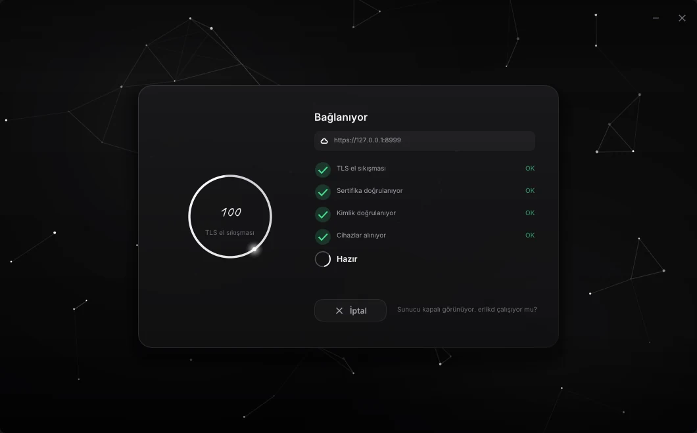
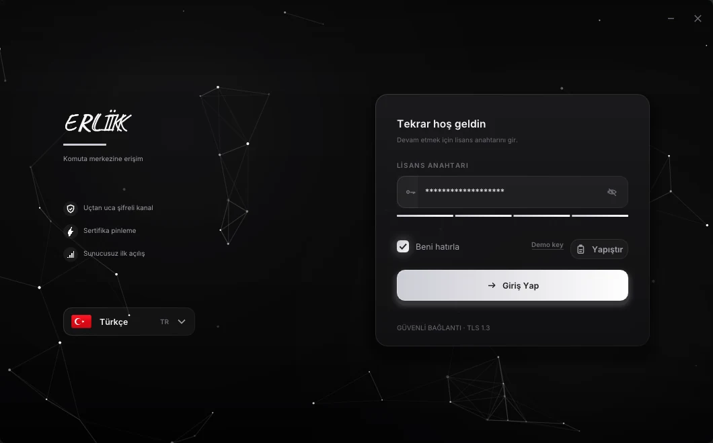
| Port | Ne için |
|---|---|
8445 | Admin panel API'si (HTTPS) — panelin konuştuğu port |
8444 | Kayıt (enrollment), tek kullanımlık anahtar |
8443 | Veri düzlemi (mTLS gRPC) |
8446 | Eski “pull” kanalı (mTLS HTTP) |
8447 | Tünel dinleyicisi (loopback) |
erlikd -lan # LAN'daki telefonlar erişebilsin
erlikd -panel-open # yalnız loopback'te giriş ekranını atla (kimlik doğrulamayı atlamaz)-panel-open giriş ekranını atlar;
parola yine de sunucuda doğrulanır. Uzak bağlantıda her durumda parola gerekir.
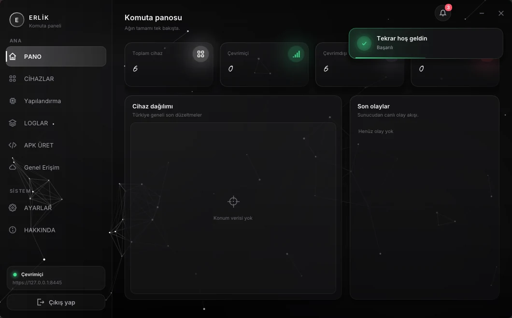
sequenceDiagram
autonumber
actor U as Operatör
participant P as ERLIK.exe
participant D as erlikd
participant A as Ajan APK
U->>P: Lisans anahtarı
P->>P: Biçim doğrulama (16+ karakter)
P->>D: POST /api/login { password }
D-->>P: erlik_session + erlik_csrf
P->>D: GET /api/whoami
D-->>P: { authenticated }
P->>D: GET /api/devices
D-->>P: device[]
A->>D: Kayıt anahtarı ile enroll
D-->>A: veri düzlemi adresi
A->>D: gRPC stream (mTLS)
D-->>P: SSE /api/stream — event: log
P->>D: GET /api/devices/{id}/commands
Sol sütun sabit gezinme; sayfalar arasında Ctrl+K paleti veya Ctrl+1…8 ile geçebilirsin.
Girişten sonra açılan ekran. Üstte dört sayaç (toplam, çevrimiçi, çevrimdışı, iptal edilen), solda son konum haritası, sağda son olaylar akışı.
Carousel ve liste görünümü aynı veriyi gösterir. Arama ad ve gruba bakar; durum süzgeci (Tümü / Çevrimiçi / Çevrimdışı / İptal) üstteki sekmelerde. Liste 4 saniyede bir kendini tazeler, F5 elle tazeleme yapar.
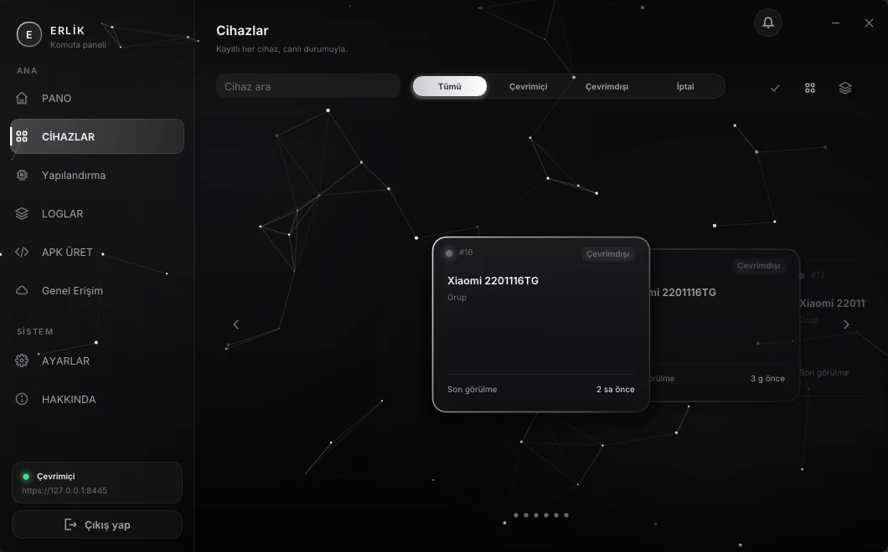
Seçilen cihaz için yedi sekme: Takip, Canlı ekran, Kumanda, Dosya, Konum, Geçmiş, Kopya. Sağ üstte APK güncelle ve İptal et düğmeleri durur.
Komut tipi açılır listeden seçilir, argümanlar JSON olarak yazılır, Gönder ile kuyruğa girer.
Sağdaki geçmiş, komutun durumunu sunucunun söylediği gibi gösterir:
queued → finished / failed. Panel kendi durum makinesini uydurmaz.
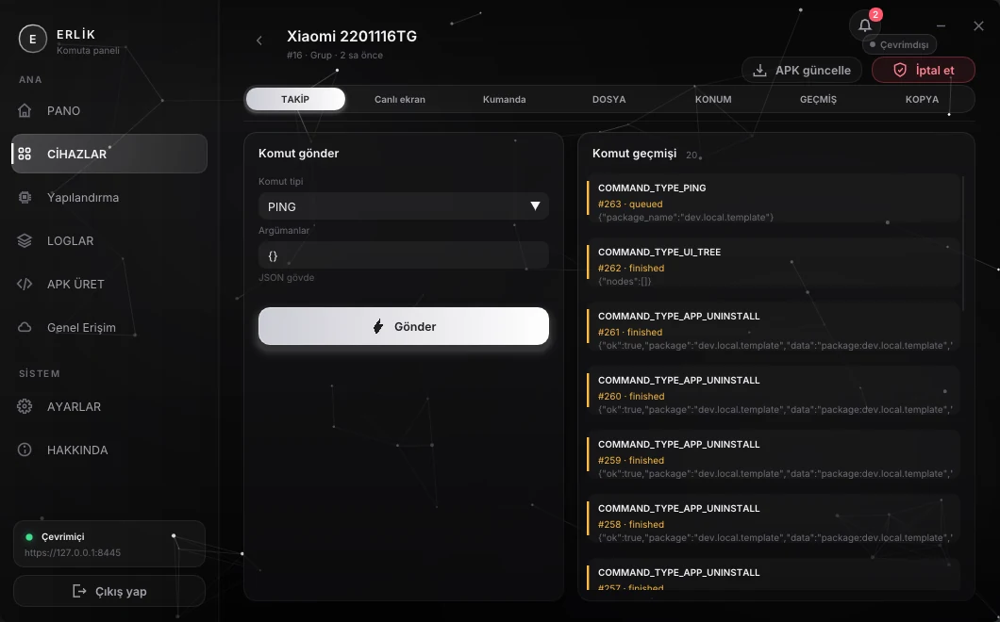
Ajanın gönderdiği JPEG kareleri gösterilir. Çözme işçi iş parçacığında yapılır, dokuya yalnız yeni kare yüklenir; bu yüzden akış sırasında arayüz donmaz.
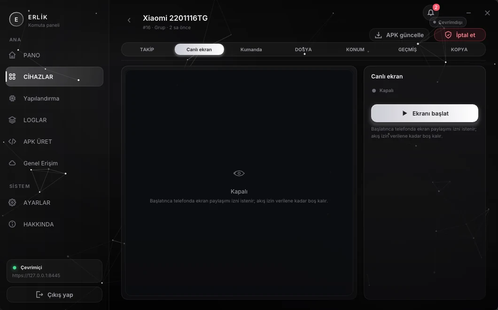
Ekran görüntüsü al, koordinata dokun, kaydır, donanım tuşlarına bas, metin yaz, UI ağacını çek ve metne göre tıkla. Cihaz yöneticisi eylemleri (kilit, parola, kamera) de burada.
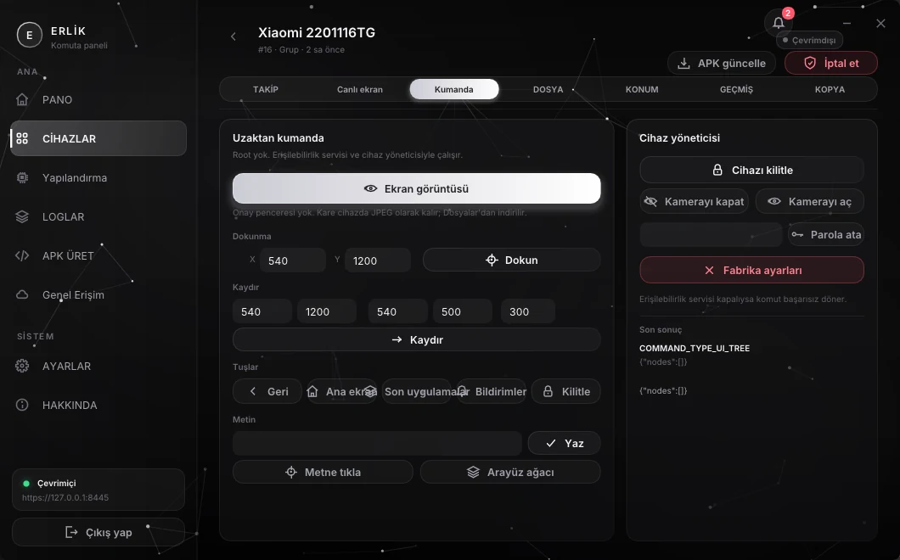
Dizin gezme, dosya indirme (blob) ve cihaza yükleme. Silinen dosyalar işaretli kalır;
FILE_RESTORE ile geri alınabilir, FILE_PURGE kalıcı siler.
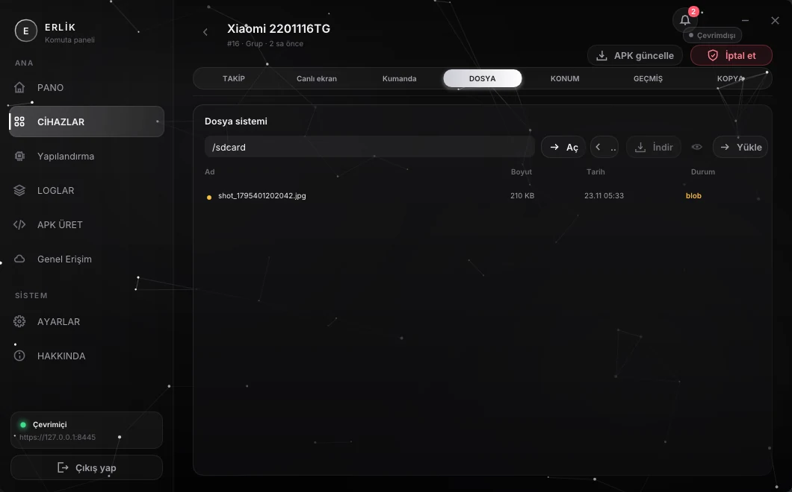
GPS noktaları OpenStreetMap üzerinde; sağda enlem/boylam, doğruluk, hız, sağlayıcı, son görülme, düzeltme sayısı ve rota özeti (toplam mesafe, hareket süresi, durak sayısı).
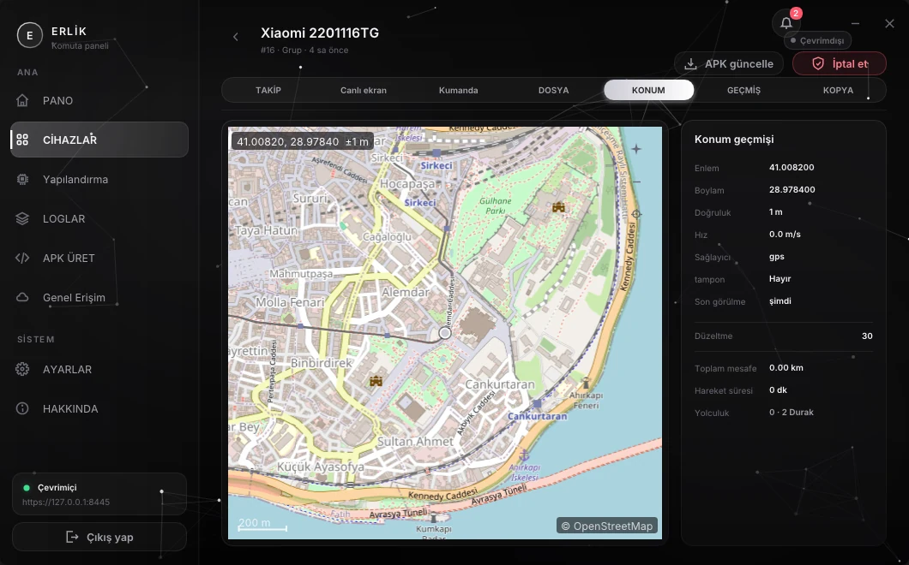
Cihazdan gelen olaylar: bildirimler, servis durumları, komut sonuçları. Her satırda sıra numarası ve JSON yükü görünür. Sütunlar sunucudan geldiği gibi gösterilir.
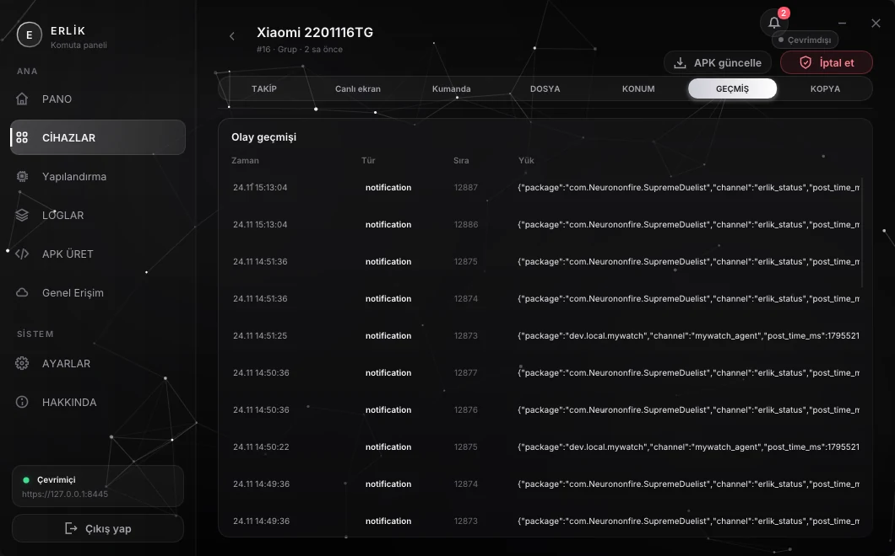
Yeni cihaz eklemek için tek kullanımlık anahtar üretilir, panoya kopyalanır ve dört adımlı rehberle ajana girilir. Anahtar sunucuda tek kullanımlıktır; yeniden kullanılamaz.
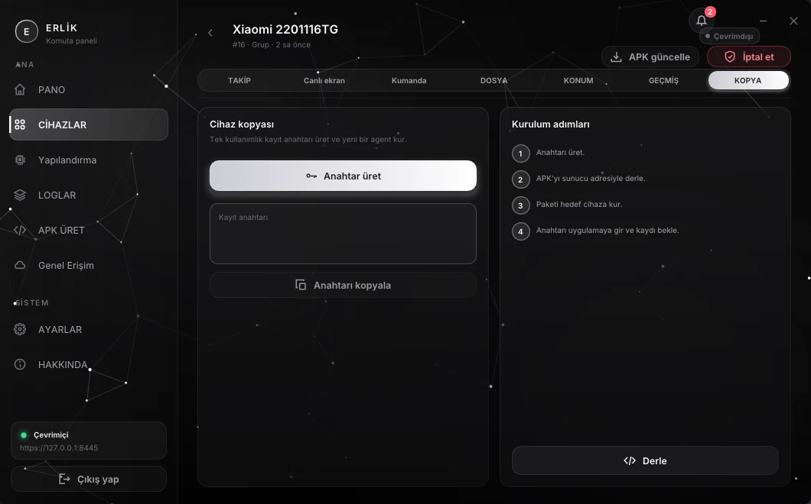
Ajanın config v2 belgesi: ekran FPS/kalite, mikrofon, konum aralığı, bildirimler,
dosya erişimi, heartbeat; kimlik (simge gizleme, sessiz bildirim) ve özellik anahtarları.
Belge panelde salt okunur görünür — kaydetme, itme ve geri alma sunucu üzerinden yürür.
CONFIG_APPLY komutuyla iner.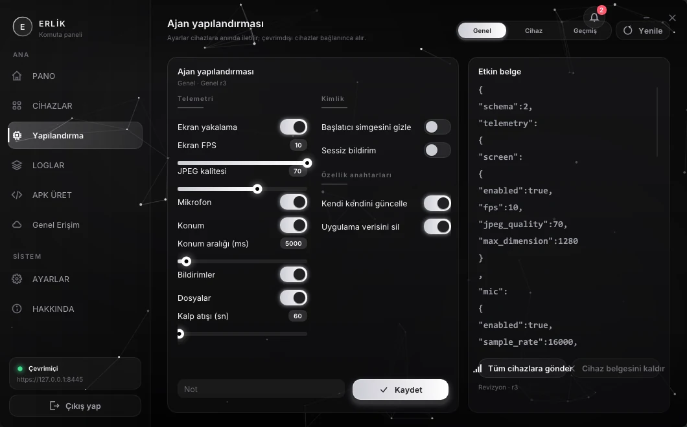
Sunucunun SSE akışı üç kaynağı karıştırır: command, event, audit.
Süzgeçler bunları ayırır; proto enum adları okunur metne çevrilir (“COMMAND_TYPE_PING” → “ping”).
Görünen her şey CSV olarak dışa aktarılabilir.
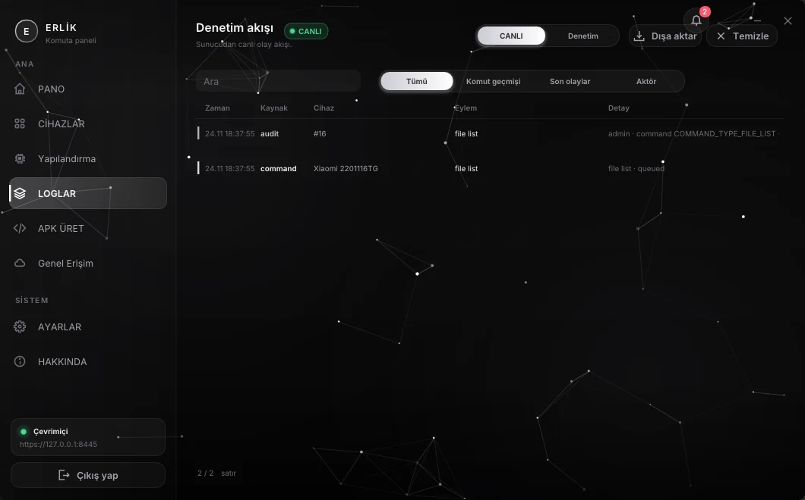
Panel, binder ile ajan APK'sını birleştirip imzalı bir paket üretir. Dört aşama:
hazırla → yamala (manifest + smali) → imzala (apksigner) → yaz. Çıktı
build/ERLIK-*.apk olarak düşer.
erlikbinder.exe yolu.
Yamalanacak temel APK.
Etiket, paket adı, ikon; sunucu adresi + port ve CA sertifikası.
İzin maskesi, özellik maskesi; başlatıcı simgesini gizle, sessiz bildirim, kaldırma engeli.
Derle → Kur + izin (ADB) veya QR ile telefonda aç.
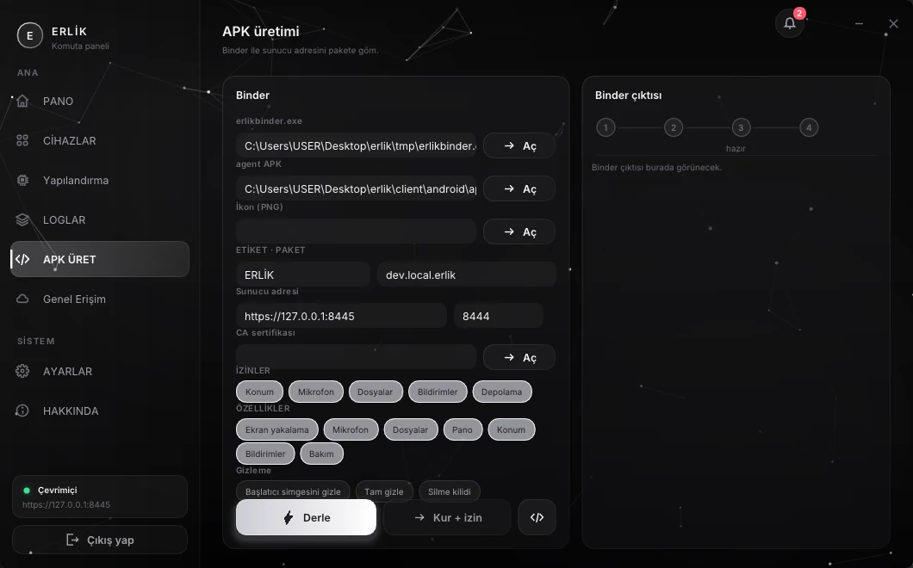
flowchart TD
B["Binder seç
erlikbinder.exe"] --> G["Ajan APK seç"]
G --> M["Etiket · paket · ikon"]
M --> S["Sunucu adresi + CA"]
S --> P["İzin maskesi + özellik maskesi"]
P --> H["Gizleme katmanları"]
H --> C{"Derle"}
C --> C1["1. hazırla: geçici dizin"]
C1 --> C2["2. yamala: manifest + smali"]
C2 --> C3["3. imzala: apksigner"]
C3 --> C4["4. yaz: build/ERLIK-*.apk"]
C4 --> QR["QR / Kur + izin / ADB"]
Telefon farklı bir ağdaysa panelin portunu internete açmak yerine cloudflared tüneli kullanılır.
İndir ve kur cloudflared ikilisini getirir; tünel açıldığında
https://*.trycloudflare.com adresi üretilir ve ajanın keşif belgesi yayınlanır.
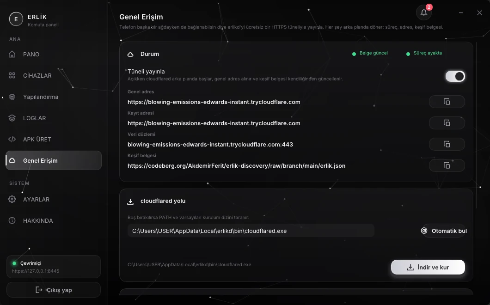
flowchart LR
O["Operatör: tünel açık"] --> D["erlikd süpervizör"]
D --> C["cloudflared süreci"]
C --> U["https://*.trycloudflare.com"]
D --> J["keşif belgesi (JSON)"]
J --> R["Codeberg deposu"]
U --> A["Ajan"]
R --> A
D -.->|"durum yoklanır"| P["Panel /api/tunnel"]
Dil (7 dil), vurgu rengi (6 hazır + özel), arka plan stili (Aurora, Waves, Warp, Grid, sabit), parçacık/cam/animasyon yoğunluğu, DPI ölçeği, tepsi davranışı, “üstte tut” ve stream proof.
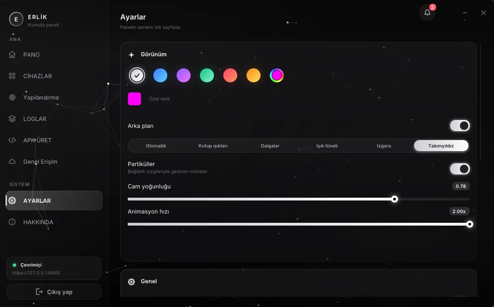
Hakkında sürüm, derleme zamanı ve lisans bilgisini gösterir. Ctrl+K paleti sayfa ve cihaz arar; zil simgesi bildirim merkezini açar ve okunmamışları sayar.
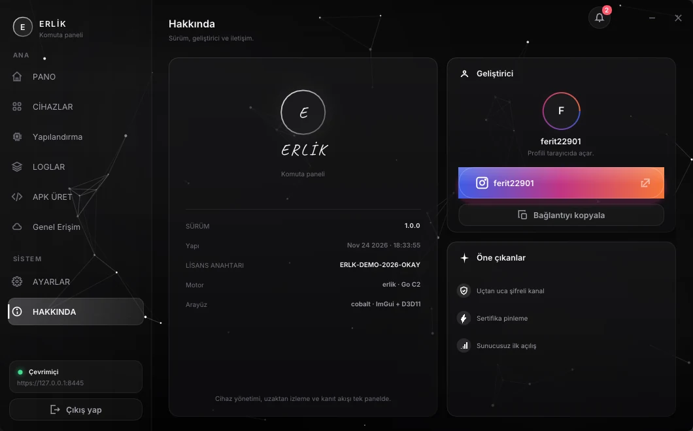
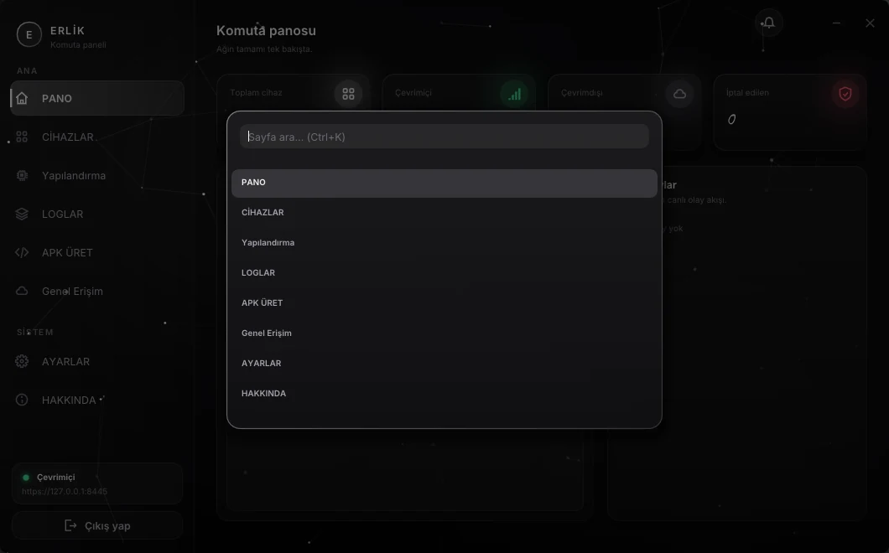
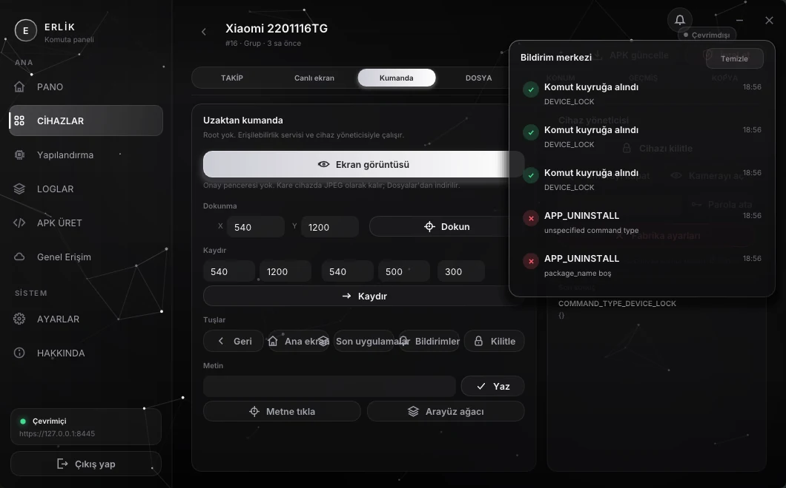
| Kısayol | İşlev |
|---|---|
| Ctrl+K | Komut paleti (sayfa + cihaz arama) |
| Ctrl+1…8 | Pano · Cihazlar · Yapılandırma · Loglar · APK Üret · Genel Erişim · Ayarlar · Hakkında |
| F5 | Cihaz listesini elle tazele |
| Esc | Açık katmanı kapat; katman yoksa tepsiye in |
| F12 | ImGui debug overlay |
| ↑ ↓ Enter | Palet içinde gezinme ve seçim |
Takip sekmesindeki tipler ajanın CommandHandlers dosyasıyla birebirdir.
{} varsayılan argüman şablonudur.
flowchart LR
U["Operatör
Takip / Kumanda"] --> Q["Enqueue()"]
Q --> API["POST /api/devices/{id}/commands"]
API --> K["erlikd kuyruğu"]
K --> G["gRPC → ajan"]
G --> R["sonuç / hata"]
R --> V["GET /api/devices/{id}/commands"]
V --> UI["komut geçmişi
queued → finished / failed"]
DEVICE_WIPE, APP_DATA_WIPE ve cihaz iptali
çift onay ister. “İptal et” kalıcıdır — cihaz kaydı geri alınamaz.
Önce belirtiyi bul; tablo nedeni ve çözümü verir. Hiçbiri tutmuyorsa günlüklere bak (en altta).
| Belirti | Neden | Çözüm |
|---|---|---|
vcvars64.bat bulunamadi | MSVC C++ iş yükü kurulu değil | Visual Studio Installer → Desktop development with C++ iş yükünü ekle |
| Derleme yarıda kalıyor, kaynak bulunamıyor | SDK eksik | Windows 10/11 SDK'yı kur; ardından build.bat'ı yeniden çalıştır |
| Bağlama (link) hataları | Eksik kütüphane listesi | build.bat'ı değiştirmediysen yeniden çek; elle derliyorsan d3d11 dxgi d3dcompiler dwmapi winhttp crypt32 ekle |
| Belirti | Neden | Çözüm |
|---|---|---|
DirectX 11 başlatılamadı | Sürücü sorunu veya uzak masaüstü oturumu | WARP yedeği devreye girer; ekran kartı sürücüsünü güncelle, RDP yerine yerel oturum dene |
| Pencere açılışta siyah / hiç görünmüyor | Tepside kalmış ikinci örnek | Tek örnek kilidi mevcut pencereyi öne getirir; tepsi simgesine tıkla, fazladan ERLIK.exe kopyasını kapat |
| Logo/font yok, arayüz çıplak | assets\ klasörü bulunamadı | Klasörü EXE'nin yanına kopyala (bir veya iki üst dizin de kabul edilir) |
| Yazılar bulanık | DPI ölçeği | Ayarlar → arayüz ölçeği; 0 = sistem DPI'ı |
| ESC'ye basınca panel kayboluyor | hide_on_close=1 | Tepsi simgesinden geri aç; davranışı Ayarlar'dan kapat |
| Belirti | Neden | Çözüm |
|---|---|---|
| “Sunucu kapalı görünüyor. erlikd çalışıyor mu?” | Sunucu kapalı, yanlış port veya yanlış adres | erlikd'yi başlat; adresin https://…:8445 olduğunu doğrula |
| LAN'daki telefondan sunucuya ulaşılamıyor | Sunucu yalnız loopback'te dinliyor | erlikd -lan ile başlat; Windows güvenlik duvarında 8443–8447 aralığını aç |
| Parola reddediliyor | Yanlış parola veya loopback dışı erişim | Sunucu veri dizinindeki admin.pass dosyasına bak; uzak erişimde parola zorunlu |
| Bağlantı bir aşamada takılıyor | Sertifika pini değişti | Panel “CA yenilendi” bildirimi verir, yeni iz yazılır; eski davranış için ERLIK_CA_PIN_STRICT=1 |
| Sistem saati hatası / TLS başarısız | Saat kayması | Windows saatini eşitle; sertifika geçerlilik aralığı saate bağlı |
| Belirti | Neden | Çözüm |
|---|---|---|
| Cihaz “çevrimdışı” ama telefonda açık | Keepalive politikası | Sunucuda MinTime: 20s, PermitWithoutStream: true |
| Kayıttan sonra erişilemeyen adres | VPN / Hyper-V gibi çoklu ağ arabirimi | Sunucu veri düzlemi adresini ajanın Host başlığından çözer; sanal adaptörü geçici kapat |
| Kayıt anahtarı “kullanılmış” diyor | Anahtar tek kullanımlık | Kopya sekmesinden yeni anahtar üret |
| Cihaz listede yok | Süzgeç veya arama | Süzgeci Tümü yap, aramayı temizle, F5 |
| Belirti | Neden | Çözüm |
|---|---|---|
| Canlı ekran siyah / kare gelmiyor | Ekran yakalama izni yok veya akış kapalı | APK üretiminde “Ekran yakalama” özelliğini işaretle; SCREEN_START gönder |
| Dosya listesi boş | Depolama izni | İzin maskesini kontrol et, Kur + izin veya tools\izin-ver.ps1 |
| APK kurulumunda izin reddi | MIUI/HyperOS tek dokunuşla izin vermez | Panelde Kur + izin; olmazsa ADB ile tools\izin-ver.ps1 |
| Derleme hatası: binder bulunamadı | Yanlış erlikbinder.exe yolu | Dosyayı seç; çıktı build\ altına yazılır |
| Üretilen APK telefonda açılmıyor | Paket adı çakışması / imza | Paket adını değiştir, yeniden derle |
| Belirti | Neden | Çözüm |
|---|---|---|
| Tünel adresi eski | cloudflared süreci düşmüş | Genel Erişim → Yenile; gerekirse İndir ve kur |
| Tünel var ama ajan bağlanmıyor | Keşif belgesi eski adresi gösteriyor | Yeni adresi ajana ilet veya belgeyi yeniden yayınla |
| Loglar > Canlı boş | SSE alanlarında boşluk kırpılmamış | Sunucu sürümünü panelle eşleştir (ayrıştırma düzeltildi) |
| Yol | İçerik |
|---|---|
%APPDATA%\ERLIK\logs\panel.log | Zaman damgalı INFO / WARN / ERROR satırları |
panel.1.log, panel.2.log | 2 MB'a ulaşınca döndürülen önceki dosyalar |
logs\crash-*.txt | İstisna kodu, adres ve son 200 günlük satırı |
%LOCALAPPDATA%\erlik-menu\ca.sha1 | TOFU CA parmak izi (yenilenince .old olarak saklanır) |
Panel bir istemcidir: envanter, komut kuyruğu ve canlı akış erlikd'den gelir.
Sunucu yoksa yalnız arayüz açılır, veri gelmez. Sunucu aynı makinede veya LAN'daki bir makinede çalışabilir.
Hayır. Aynı ağdaysan erlikd -lan yeterli. Farklı ağdaysan Genel Erişim tünelini açıp
ajana tünel adresini verirsin.
Panel yalnızca biçimi denetler (16+ alfanümerik karakter). Gerçek kimlik doğrulama sunucu parolasıdır.
Anahtar, Windows DPAPI ile şifrelenip config.ini içinde saklanır.
Lisans alanını örnek bir anahtarla doldurur; biçim denetimini geçmen için. Sunucu tarafında bir yetki vermez.
Kod imzalama sertifikası olmadığı için SmartScreen uyarır. Dosyayı kendi derlemen veya release'ten indirdiysen Ek bilgi → Yine de çalıştır ile devam edebilirsin.
Panel tarafında %APPDATA%\ERLIK\config.ini ve günlükler; cihaz/komut/olay/konum verisi
sunucunun veri dizinindeki SQLite tabanında. Panel kendi başına veri saklamaz.
Ajan ayrı bir depoda geliştiriliyor; sürüm gereksinimleri oradaki belgede tanımlı. Panel tarafı Android sürümünden bağımsızdır — sunucunun gördüğü cihaz kaydıyla çalışır.
Tek örnek kilidi devrede: ikinci kopya açılmaz, mevcut pencere öne getirilir. Pencere tepsideyse
tepsi simgesine tıkla. Görev yöneticisinde artık ERLIK.exe süreci kalmadığından emin ol.
Hayır. Dil Ayarlar sayfasından anında değişir; tüm dizeler tek tabloda tutulur, eksik çeviri yoktur.
Evet. Ajan zaten kuruluysa Kopya sekmesinden tek kullanımlık anahtar üretip ajana girmen yeterli. APK üretimi, ajanı yeniden paketlemek/özelleştirmek istediğinde gerekir.
Kapalı kaynak
Özel lisans
Yalnızca sahibi olunan veya yönetim yetkisi verilen cihazlarda kullanılmak üzere geliştirilmiştir. Kullanım koşullarının tamamı depodaki lisans dosyasında.
LICENSE dosyasını oku